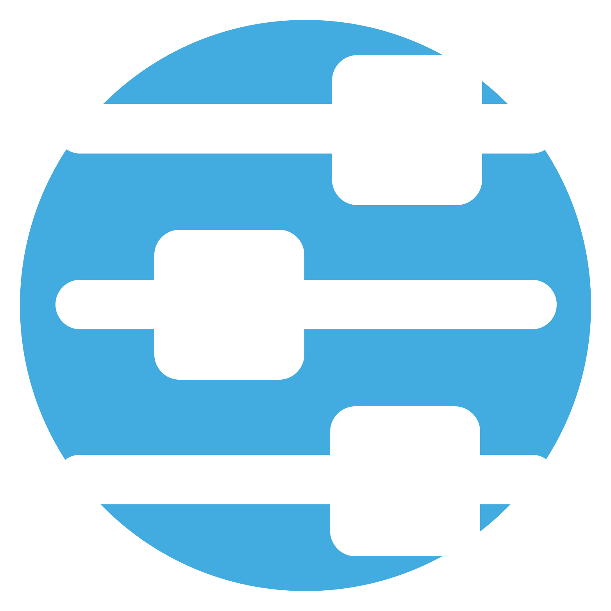
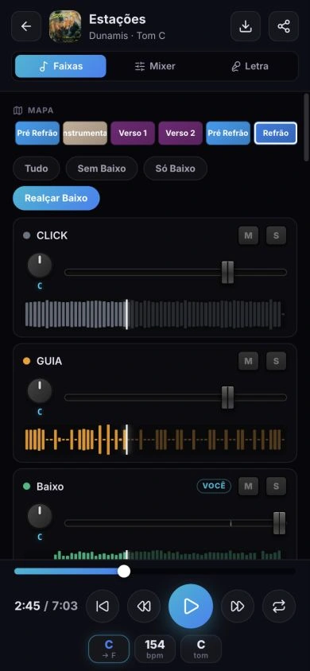

01
Faixas
Realce seu instrumento, ouça só a sua parte ou toque junto com as outras faixas. O mapa mostra as seções da música.

Automate ScaleCada músico ouve sua parte. A equipe chega com o repertório na mão. E você organiza a escala, as confirmações e os avisos no mesmo aplicativo.
Demo sem cadastro · No celular, tablet e computador
Incluído no Automate Pro Premium.
8 voluntários e degustação com 3 músicas.

O player multipista separa a escuta por instrumento. Você escolhe o que precisa ouvir e volta ao trecho que quer estudar.
Realce seu instrumento, ouça só a sua parte ou toque junto com as outras faixas. O mapa mostra as seções da música.
Ajuste os volumes, silencie uma faixa ou ouça um instrumento sozinho para entender a execução.
Acompanhe a letra sincronizada com o áudio. Quando o repertório inclui cifra, ela também fica disponível no player.
Repita uma seção em loop, ajuste o tom e reduza a velocidade para estudar os detalhes. Na demo, você pode experimentar um trecho sem cadastro.
Abrir a demo sem cadastroData, funções, repertório e confirmações. Cada pessoa encontra o que precisa preparar para o próximo encontro.
O integrante confirma sua participação pelo celular e informa os dias em que não pode estar presente.
Converse no chat do time e mantenha os detalhes junto da escala. As notificações ajudam a acompanhar convites e alterações.
Peça sugestões para a escala e o setlist. Você confere a proposta da assistente e decide o que publicar.
Use no navegador do celular, tablet ou computador. No celular, você também pode adicionar o Scale à tela inicial.
O Automate Manager conecta o material que você prepara ao aplicativo da equipe.
Organize a biblioteca e envie o repertório preparado no REAPER, com as informações das músicas.
Disponibilize o material para o time. O plano define a quantidade de músicas e voluntários.
A equipe acessa a escala e estuda as faixas no player, durante a semana e antes do ensaio.
O responsável pela equipe usa o Automate Pro Premium. Os integrantes entram por convite.
O plano Básico não inclui o Scale. Consulte os limites e as condições atuais na página de planos.
Não. O responsável usa o Premium e convida os integrantes. A quantidade de voluntários segue o limite do plano da organização.
Para acessar a escala e estudar no Scale, basta usar o aplicativo no navegador. O REAPER e o Automate Manager ficam com quem prepara e envia o repertório.
Sim. A demo pública permite experimentar um trecho de música no player, sem cadastro. Abrir a demo ↗
Automate Scale